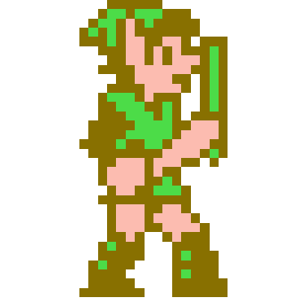

Web
Services
Gateway
Interface
...without the Web
by Nathan Alderson
Who am I?
- Software Design Engineer
- Computer Hobbyist
- Person
nathanalderson.com
 @nathanalderson
@nathanalderson facebook.com/nathanalderson
facebook.com/nathanalderson github.com/nathanalderson@nathanaldersonfacebook.com/nathanaldersongithub.com/nathanalderson
github.com/nathanalderson@nathanaldersonfacebook.com/nathanaldersongithub.com/nathanaldersonUse a spacebar or arrow keys to navigate